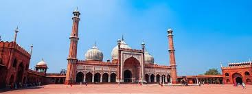
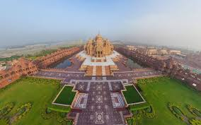
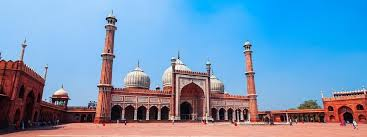
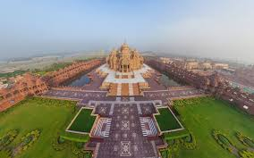

Red Fort
Massive Mughal fort complex with important independence day speeches.
Delhi combines centuries of history with a fast, modern city. From Old Delhi’s lanes and Jama Masjid to New Delhi’s wide roads and India Gate, you get a full picture of urban India.
Travelers come for monuments, museums, markets and food: kebabs, chole bhature, parathas, chaats and more. It also works as a hub for Agra and Jaipur trips.
Massive Mughal fort complex with important independence day speeches.
War memorial and wide avenues, especially lively in the evening.
UNESCO site with a tall minaret, ruins and landscaped gardens.
Beautiful garden tomb often seen as a precursor to the Taj Mahal.
Narrow lanes, spice markets, street food and views of Jama Masjid.
Combine Qutub Minar, Humayun’s Tomb and India Gate in one day.
Try Paranthe Wali Gali, Karim’s, modern cafes and shopping at Connaught Place.
Choose based on how much time you have.
Tight schedule
Good first visit
3–4 days
Access to metro, restaurants, shops and main landmarks.
Good for first-time visitors.
Quieter, greener neighborhoods with cafes and malls.
Ideal for families and longer stays.
Modern hotels, easy airport access and business-friendly facilities.
Best for short layovers or work trips.


 




Basic habits that make the city easier to handle.